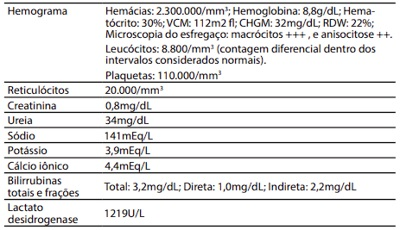

Questão 1 · Medicina Preventiva · 4000164743Assinale a alternativa que indica corretamente a sequência das medidas de associação mais adequadas para os seguintes estudos epidemiológicos - transversal; ecológico; caso-controle; coorte:
A Odds ratio; correlação; risco relativo; Odds ratio.
B Razão de prevalência; correlação, odds ratio ; risco relativo.
C Razão de prevalência; Odds ratio; Odds ratio; risco relativo.
D Correlação, razão de prevalência; risco relativo; odds ratio.
E Odds ratio; razão de prevalência; risco relativo; correlação.
Questão 2 · Medicina Preventiva · 4000164742Observe a tabela abaixo: Analise as afirmativas abaixo derivadas deste estudo entre hábito de fumar e câncer de pulmão: 1. O risco relativo é obtido pela divisão da incidência entre expostos e incidência em não expostos. 2. A razão de prevalência é obtida pela divisão dos casos entre os fumantes e não fumantes. 3. Odds ratio é obtido pela divisão de situações coincidentes e situações não coincidentes. Assinale a alternativa que indica todas as afirmativas corretas.
A É correta apenas a afirmativa 1.
B É correta apenas a afirmativa 2.
C São corretas apenas as afirmativas 1 e 2.
D São corretas apenas as afirmativas 1 e 3.
E São corretas apenas as afirmativas 2 e 3.
Questão 3 · Medicina Preventiva · 4000164741Um laboratório interessado em lançar um novo medicamento realizou testes sobre o tipo de embalagem mais adequado à conservação do produto. Foram testados dois materiais, submetidos a condições indesejáveis - calor continuado acima de 30 graus Celsius e exposição à claridade do sol. Na primeira etapa, com exposição ao calor, os resultados observados foram os seguintes: Em relação a exposição ao sol, os resultados foram: O teste de qui-quadrado obtido foi : χ 2 = 3,07 (p = 0,0799). A partir desse resultado, você considera que:
A As diferenças foram pequenas e o laboratório pode optar por qualquer um deles.
B As diferenças foram pequenas, mas o laboratório deve preferir o vidro transparente.
C A diferença pequena sugere aumentar os exemplares para se tirar conclusões.
D As diferenças foram estatisticamente significativas, e o laboratório deve preferir o vidro escuro.
E Não se pode aplicar o qui-quadrado para este tipo de experimento.
Questão 4 · Medicina Preventiva · 4000164740Um laboratório interessado em lançar um novo medicamento realizou testes sobre o tipo de embalagem mais adequado à conservação do produto. Foram testados dois materiais, submetidos a condições indesejáveis - calor continuado acima de 30 graus Celsius e exposição à claridade do sol. Na primeira etapa, com exposição ao calor, os resultados observados foram os seguintes: A expressão matemática p < 0,0001 obtida no experimento representa que:
A A significância é baixa.
B O poder do teste é pequeno demais.
C A diferença entre os grupos é desprezível, e podemos aceitar a hipótese nula.
D A probabilidade de errar ao assumir que existe diferença entre os grupos é grande.
E O erro é desprezível, e pode-se aceitar a hipótese alternativa
Questão 5 · Medicina Preventiva · 4000164739Um laboratório interessado em lançar um novo medicamento realizou testes sobre o tipo de embalagem mais adequado à conservação do produto. Foram testados dois materiais, submetidos a condições indesejáveis - calor continuado acima de 30 graus Celsius e exposição à claridade do sol. Na primeira etapa, com exposição ao calor, os resultados observados foram os seguintes: O pesquisador aplicou um teste de qui-quadrado e obteve: alternativa correta.
A A pesquisa é inconclusiva.
B O laboratório deve optar por testar novamente.
C O laboratório deve utilizar a embalagem de plástico.
D O laboratório deve utilizar a embalagem de vidro.
E O laboratório pode usar qualquer uma das duas embalagens.
Questão 6 · Medicina de Família e Comunidade · 4000164738O “itinerário terapêutico” do paciente é algo que pode car oculto em uma consulta médica, mas que interessa ao médico conhecer, sobretudo em problemas crônicos, porque:
A Os pacientes geralmente já realizaram cuidados prévios e não raro o fazem em paralelo ao tratamento médico (com outros curadores/remédios), e isso pode alterar a decisão clínica.
B Itinerário terapêutico geralmente é entendido como o trajeto geográfico da casa ao local do atendimento médico, o que influencia o acesso especialmente na atenção primária.
C Nos problemas crônicos os pacientes geralmente têm dificuldade de seguir as orientações terapêuticas e preventivas, desviando-se do itinerário proposto pelo médico.
D O itinerário terapêutico é a sequência correta de medicações a serem ingeridas nos diversos horários do dia, que não raramente confunde os idosos.
E O itinerário terapêutico é a sequência de cuidados já realizados antes de chegar ao médico, que deve ser abandonada para uma adesão plena ao tratamento médico.
Questão 7 · Plano A · Plano B · 4000164737A revista Lancet considerou-a a descoberta médica mais importante do século 20. Foi desenvolvida na década de 1960 em Bangladesh e Índia pelo médico Dilip Mahalanabis. Cercada por ceticismo e descon ança, a nova terapia salvou milhões de vidas em campos de refugiados em Bangladesh. Com a escassez do tratamento padrão, ele começou a administrar a nova terapia aos pacientes menos graves, autorizando mães, irmãs, cônjuges, avós e amigos a tratarem seus familiares doentes. A letalidade foi de 3%, tendo sido 20-30% nos campos que usaram tratamento padrão. O ceticismo era tão alto que várias revistas médicas rejeitaram o artigo de Mahalanabis, acreditando que seus resultados não eram confiáveis. (Bulletin of the World Health Organization; v.75, n.5, p.471-472, 2001). A nova terapia de que trata o artigo, hoje considerada uma terapia de primeira linha, é a terapia:
A antimicrobiana para a malária.
B antimicrobiana para tuberculose.
C de reidratação oral para diarreia aguda.
D de suporte com oxigênio para gripe epidêmica.
E com betabloqueador para insuficiência cardíaca congestivo.
Questão 8 · COVID 19 · Inf ectologia · 4000164736Um trabalhador de um escritório onde também trabalham outras pessoas estava sintomático há 3 dias e foi diagnosticado com covid-19 a partir de resultado positivo para Teste RT-qPCR, realizado no terceiro dia de sintomas. Durante os dias que antecederam o resultado positivo, mesmo sintomático, ele continuou trabalhando normalmente. Com relação às pessoas que tiveram contato com este trabalhador no seu local de trabalho, qual procedimento deve ser adotado pelo empregador, a fim de resguardar a saúde de seus trabalhadores?
A Testar imediatamente todos os contatos, afastar os positivos e manter os negativos trabalhando com medicação preventiva.
B Manter todos os contatos em isolamento e em monitoramento por um período de 14 dias. Independente de apresentarem sinais e sintomas sugestivos de covid-19. Todos devem ser orientados a procurar um serviço de saúde para avaliação e testagem.
C Manter todos os contatos em isolamento e em monitoramento. Testar todos com teste rápido de antígeno para covid-19 a partir do 3° dia de isolamento. Aqueles que testarem positivo deverão permanecer em isolamento por até 14 dias. Os demais poderão retornar ao trabalho.
D Manter todos os contatos em isolamento e em monitoramento. Testar todos com teste rápido/sorológico para covid-19 a partir do 3° dia de isolamento. Aqueles que testarem negativo poderão retornar ao trabalho. Os que testarem positivo deverão permanecer em isolamento por até 14 dias.
E Manter todos os contatos em isolamento e em monitoramento por um período de 14 dias. Caso desenvolvam sinais ou sintomas sugestivos de covid-19 devem ser orientados a procurar um serviço de saúde para avaliação e testagem.
Questão 9 · Medicina Preventiva · 4000164735Um dos problemas dos rastreamentos da maioria dos cânceres que torna baixo o valor preditivo positivo dos seus testes de rastreamento é a:
A Alta especificidade dos testes.
B Alta prevalência da doença.
C Baixa prevalência da doença.
D Baixa sensibilidade dos testes.
E Sensibilidade e especificidade menores que 90%.
Questão 10 · Medicina Preventiva · 4000164734Medidas como a prevenção de hospitalização via tratamento precoce da covid-19 com fármacos podem ser consideradas como prevenção primária (P1) e podem gerar danos iatrogênicos. Em P1 com fármacos, a não male cência tem certa proeminência em relação à bene cência, pois seus benefícios potenciais são futuros e para um reduzido número de pessoas, enquanto todos os que as recebem são submetidos aos riscos de seus danos. Por isso, esse tipo de P1:
A Como prevenir é melhor, a experiência clínica dos especialistas é suficiente para avalizar a segurança e eficácia de uma medida preventiva.
B Necessita estar fundamentada em estudos observacionais com número significativo (centenas) de pacientes bem conduzidos, avalizando a sua segurança e eficácia.
C Necessita estar fundamentada em estudos de coorte, os melhores para definir a segurança e a eficácia de farmacoterapia preventiva.
D Necessita estar fundamentada em resultados favoráveis de ensaios clínicos randomizados que mensurem benefícios e danos (e suas revisões), antes de ser aplicada às populações.
E Necessita estar fundamentada em estudos do tipo caso-controle, os melhores para definir a segurança e a eficácia de farmacoterapia preventiva.
Questão 11 · COVID 19 · 4000164733Que teste é indicado para um professor que está há 5 dias com sintomas de covid-19?
A Teste rápido/sorológico para covid-19.
B Teste de RT-qPCR para vírus SARS-CoV-2.
C Teste rápido de antígeno para SARS-CoV-2.
D Teste de RT-qPCR para vírus SARS-CoV-2 ou Teste rápido para detecção de antígeno para SARS-CoV-2.
E Nenhuma das opções é correta.
Questão 12 · Medicina Preventiva · 4000164732Um trabalhador chega à entrada de seu local de trabalho e é abordado por uma equipe de saúde. Após realizar teste rápido de antígeno para SARS-CoV-2, que apresenta resultado positivo (reagente), ele relata que nunca teve covid-19 e ainda não foi vacinado. Diante desta situação, a equipe deve, com base em saúde coletiva:
A Afastá-lo do trabalho apenas se tiver pelo menos um sintoma de covid-19.
B Afastá-lo do trabalho apenas se tiver menos de 14 dias do início dos sintomas.
C Afastá-lo do trabalho, mesmo sem sintomas de covid-19.
D Encaminhá-lo para trabalhar normalmente, se o trabalhador estiver sintomático.
E Medicá-lo preventivamente e encaminhá-lo para trabalhar normalmente.
Questão 13 · Medicina Preventiva · 4000164731Alguns fatores podem in uenciar na prevalência de uma doença, levando ao seu acréscimo ou diminuição. Assinale a alternativa que apresenta o fator que faz com que ocorra a diminuição da prevalência de uma doença, mantidos constantes os demais fatores:
A Menor incidência da doença.
B Melhora no diagnóstico da doença.
C Melhor tratamento que prolongue a sobrevida dos pacientes, mas não leve à cura.
D Imigração de indivíduos doentes.
E Emigração de indivíduos sadios.
Questão 14 · Medicina Preventiva · 4000164730É uma vantagem dos estudos epidemiológicos do tipo ensaio clínico randomizado:
A Seu invariável baixo custo.
B A impossibilidade de cegamento dos sujeitos de pesquisa.
C O cálculo do odds ratio como medida de associação.
D A temporalidade de exposição e desfecho é mais facilmente estabelecida.
E A possibilidade de ajuste para fatores de confusão, por ser um estudo observacional.
Questão 15 · Medicina Preventiva · 4000164729O EPICOVID foi um importante estudo epidemiológico sobre a covid-19 realizado no Brasil. Ele teve como um dos objetivos estimar a proporção da população brasileira que apresentava anticorpos para o SARS-CoV-2. Os indivíduos eram entrevistados em seus domicílios uma única vez e realizavam testes rápidos dos anticorpos SARS-CoV-2 IgG/IgM. A quarta fase do estudo, realizada ainda em agosto de 2020, indicou que o maior percentual de infecção foi observado nas Regiões Norte (2,4%) e Nordeste (1,9%). A partir do exposto é possível indicar que o delineamento desse estudo é do tipo:
A Coorte.
B Ecológico.
C Caso-controle.
D Longitudinal.
E Transversal.
Questão 16 · Medicina Preventiva · 4000164728A vigilância epidemiológica é componente essencial de qualquer serviço de saúde, tanto em âmbito nacional quanto local. É vital que todo pro ssional de saúde domine conceitos básicos da vigilância que, inclusive, em muitos momentos, também são empregados em seus estudos e práticas clínicas. Assinale a alternativa correta em relação ao assunto.
A Prevalência é uma medida do número de casos novos de uma doença diagnosticados em uma população durante um período determinado.
B Especificidade é a medida da probabilidade de diagnosticar corretamente um não caso, ou seja, de diagnosticar como saudável uma pessoa efetivamente saudável.
C A letalidade de uma doença é calculada mediante a divisão dos óbitos causados por ela pela população residente no local.
D Endemia é a ocorrência de casos de doenças com uma incidência maior do que a esperada para uma região e período.
E Valor preditivo negativo é a medida da probabilidade de que a doença esteja presente em um indivíduo no qual o resultado de um teste diagnóstico foi positivo.
Questão 17 · Medicina Preventiva · 4000164727A noti cação de determinadas doenças e agravos à saúde é obrigação de pro ssionais e serviços de saúde. A informação advinda dessas noti cações compulsórias contribui com a vigilância epidemiológica e leva a um processo de informação- decisão-ação. Assinale a alternativa correta em relação ao assunto.
A Jamais deve-se informar à vigilância epidemiológica os casos suspeitos, apenas os confirmados, de modo a não sobrecarregar o SU
B Ao fazer a notificação de casos, o profissional de saúde sempre deve pedir a assinatura do médico para o envio dos dados.
C O Sistema de Informações Ambulatoriais (SIA) é o principal agregador dos dados de notificação compulsória.
D Fazem parte da lista fechada de doenças de notificação compulsória aquelas que corresponderam no ano anterior a, ao menos, 15% da carga de doenças da localidade.
E Existe no Brasil uma lista nacional de doenças e agravos de notificação compulsória, à qual Estados e Municípios podem adicionar outros eventos de interesse regional ou local.
Questão 18 · Princípios e Diretrizes do Sistema Único de Saúde SUS · 4000164726A formação organizada de Redes de Atenção à Saúde no Sistema Único de Saúde (SUS) com a oferta, coordenada pela atenção primária à saúde, de uma atenção contínua e integral a determinada população, é um dos principais passos a serem dados atualmente no Brasil. Sobre os pressupostos da atenção à saúde por meio de redes, é correto a rmar que elas devem:
A Sempre agir de forma reativa.
B Ser organizadas por meio de uma rede poliárquica.
C Focar seu financiamento exclusivamente por procedimentos.
D Ser voltadas essencialmente à assistência a episódios agudos.
E Ser organizadas com ênfase em ações curativas.
Questão 19 · Medicina Preventiva · Letalidade · 4000164725Considerando-se o quadro abaixo: É correto afirmar que a letalidade de COVID-19 no Brasil é de:
A 1,84%.
B 2,16%.
C 2,78%.
D 3,16%.
E 3,85%.
Questão 20 · Medicina Preventiva · 4000164724Em 2021 completam-se 31 anos desde a promulgação da Lei Orgânica da Saúde (LOS) no Brasil e 33 anos desde a aprovação da Constituição Federal, que estabeleceu a saúde como direito de todo cidadão e um dever do Estado. Sobre o Sistema Único de Saúde (SUS), é correto afirmar:
A O controle social, previsto na lei, foi uma das principais inovações do SUS, estabelecendo que cada esfera de governo deve contar com conferências e conselhos de saúde.
B Ao não incorporar a equidade entre suas diretrizes, uma das principais omissões da LOS, o SUS contribui para a manutenção das desigualdades no país.
C Os seus múltiplos desafios estão mais relacionados à gestão dos serviços, uma vez que o financiamento público per capita da saúde no Brasil é semelhante ao observado entre os países da OCDE.
D Uma das mais importantes metas para o país nos próximos anos será ampliar a cobertura da ESF, que não tem sido superior a um terço da população há uma década.
E Por meio de portarias que normatizam a Lei 8.080/90, o retorno da centralização administrativa nos últimos cinco anos tem permitido maior celeridade na aquisição de insumos e contratação de profissionais.
Questão 21 · Pediatria · O Recémnascido prétermo · 4000164723Em uma consulta de puericultura, você verifica que o paciente nasceu prematuro de 32 semanas. Ao preencher a curva de peso, você lembra que deve anotar o dado na idade corrigida do paciente. Hoje o paciente tem idade cronológica de 4 meses de idade. Assinale a alternativa que indica corretamente a idade corrigida do paciente em questão.
A 2 meses.
B 2 meses e 2 semanas.
C 2 meses e 3 semanas.
D 3 meses e 1 semana.
E Não levamos em consideração a idade corrigida para o preenchimento do pes
Questão 22 · Emergências Pediátricas · Pediatria · 4000164722Um paciente masculino, 1 ano e 6 meses de vida, é trazido à emergência devido a queda de cerca de 80 cm de altura, há 20 minutos com trauma frontal. Mãe nega perda de consciência, vômitos, sangramento pelas narinas e/ou orelhas. Relata que criança chorou muito e depois cou levemente sonolenta, mas reativa. Ao exame físico está em bom estado geral, escala de coma de Glasgow 15, pupilas isocóricas e fotorreagentes, não há sinais de fratura da base do crânio, otoscopia não identifica sinais de hemorragia, marcha normal para a idade, assim como força e movimentos nos 4 membros. À palpação do crânio não se identi cam crepitações, apenas pequeno hematoma. Com base neste caso, é correto afirmar que:
A Há indicação de tomografia do crânio devido à idade do paciente ser abaixo de 2 anos.
B Paciente com indicação de tomografia de crânio devido ao mecanismo do trauma ter sido grave.
C Paciente está neurologicamente estável e não há risco de lesão cerebral; portanto, pode ser liberado imediatamente.
D A sonolência que o paciente apresentou após o trauma é um indicativo da necessidade da solicitação da tomografia de crânio.
E Paciente deve permanecer em observação devido a terem se passado somente 20 minutos do trauma; porém não há, no momento, indicação de tomografia de crânio.
Questão 23 · Pediatria · Conduta medicamentosa · 4000164721Uma paciente feminina, 1 ano e 3 meses de vida, é trazida à emergência por ter iniciado há 4 horas quadro de diarreia líquida, cinco episódios, sem vômitos, sem febre, ausência de produtos patológicos nas fezes. Está mantendo diurese normal, não houve aumento da solicitação de água e nenhum familiar está sintomático. Mora em apartamento, a comida é toda feita em casa e somente ingere água tratada. Não frequenta creche. Ao exame físico está em bom estado geral, mucosas hidratadas, turgor preservado, conversando normalmente, sinais vitais dentro do esperado para a idade, pulsos cheios, enchimento capilar em 2 segundos e apresentou lágrimas durante choro ao ser examinada. Assinale a alternativa correta, de acordo com o Ministério da Saúde do Brasil.
A Proibir consumo de produtos lácteos.
B Ficou caracterizada desidratação grave.
C A melhor escolha terapêutica é o Plano B.
D Está indicado o uso do zinco 20 mg/dia por 10-14 dias.
E Indica-se soro glicosado a 5% após cada episódio de diarre
Questão 24 · Pediatria · Investigação por imagem · 4000164720Considere um paciente de 2 meses de vida, com diagnóstico de infecção urinária febril, por comprovação em urocultura coletada por cateterismo vesical. Ficou em internação hospitalar com tratamento com antibioticoterapia endovenosa por 10 dias. Realizou ultrassonografia, que não evidenciou alteração. Está indicado que em 4-6 meses seja dada continuidade na investigação através do seguinte exame:
A Urograma excretor.
B Uretrocistografia retrógrada.
C Cintilografia renal com DMSA.
D Cintilografia renal com DTPA.
E Tomografia computadorizada.
Questão 25 · Pediatria · Conduta · Mães inadequadamente tratadas · 4000164719No alojamento conjunto, você se depara com a seguinte situação: mãe apresentou diagnóstico de sí lis durante a gestação, sendo tratada no último mês de gravidez com penicilina benzatina 2.400.000 UI IM, dose repetida em 15 dias. O recém- nascido tem exame físico, hemograma, radiogra a de ossos longos e liquor normais, mas o VDRL é positivo. Você conclui ser um caso de sífilis congênita sem neurossífilis. Assinale a alternativa que indica corretamente o tratamento indicado, de acordo com o Protocolo Clínico e de Diretrizes do Ministério da Saúde
A Penicilina procaína IM por 7 dias
B Penicilina cristalina EV por 7 dias
C Penicilina cristalina EV por 10 dias
D Penicilina benzatina IM em dose única
E Repetir o VDRL em 30 dias e usar Penicilina benzatina se mantiver positividade.
Questão 26 · Pediatria · Classif icação e Tratamento da Crise · 4000164718Assinale a alternativa correta em relação ao tratamento da asma na emergência.
A A caracterização da gravidade do quadro não é fator importante na dose do broncodilatador inalatório a ser usado.
B O corticoide deve ser usado em todos os casos, por via oral, sendo a prednisolona a droga escolhida, na dose de 2-3 mg/kg/dia.
C O sulfato de magnésio pode ser usado nos pacientes que não respondem ao tratamento inicial na dose de 50 mg/kg. Deve-se ter cuidado com seu efeito hipertensor.
D A aminofilina tem indicação absoluta na terapia inicial na exacerbação da asma.
E O uso do brometo de ipratrópio, nos casos moderados e graves, diminui o tempo de internação e a necessidade de internação em UTI
Questão 27 · Emergências Pediátricas Parada Cardiorrespiratória PCR e Arritmias na Emergência · Pediatria · 4000164717Diante de uma reanimação cardiopulmonar em Pediatria, podemos presenciar situações diversi cadas. Assinale a alternativa correta em relação ao assunto.
A Amiodarona e lidocaína são drogas que podem ser usadas em situações de assistolia, quando o paciente não responde à epinefrina.
B A partir do momento em que intubamos o paciente a frequência de ventilação passa a ser de 10 ventilações por minuto.
C Tanto nas paradas cardíacas com ritmos chocáveis quanto naquelas com ritmos não chocáveis, há a possibilidade de uma causa reversível estar impedindo o êxito da ressuscitação.
D Em situações de ritmos chocáveis (fibrilação ventricular e taquicardia supraventricular), deve-se imediatamente fazer a desfibrilação do paciente com a dose de 2 joules/kg.
E As compressões devem ser realizadas de maneira contínua na frequência de 100-140 por minuto.
Questão 28 · Pediatria · Tratamento · 4000164716Um paciente masculino, 1 ano e 6 meses de vida, chega à emergência com quadro de convulsão tônico-clônica em domicílio. Nega episódios anteriores. Apresenta história de coriza e febre em torno de 38°C há 1 dia. Mãe relata que irmão mais velho apresentou convulsões febris. Ao exame físico apresenta novo episódio de convulsivo. Glicemia capilar 90 mg/dl e temperatura axilar 38,1°C. Assinale a alternativa indicada como tratamento inicial neste caso.
A Soro glicosado a 50%
B Dipirona endovenosa
C Fenitoína endovenosa
D Diazepam endovenoso
E Ceftriaxone intramuscular
Questão 29 · Tratamento · Pediatria · Diagnóstico · 4000164715Uma paciente feminina, 10 anos de vida, estava brincando no parque ao lado do hospital, e há 20 minutos pisou em um formigueiro. Há 5 minutos iniciou lesões avermelhadas e pruriginosas pelo corpo, dor abdominal e vômitos. Foi trazida imediatamente à emergência, observaram-se placas quentes e eritematosas por todo o corpo, Frequência Respiratória: 40 mrm, Frequência Cardíaca: 160 bpm, enchimento capilar em 2 segundos, normotensa, ausculta pulmonar normal. Frente a esse quadro, assinale a alternativa que indica a conduta inicial correta.
A Trata-se de um quadro de anafilaxia, devendo ser tratada com anti-histamínico via oral.
B Trata-se de um quadro de anafilaxia, onde a conduta inicial é a aplicação da adrenalina intramuscular.
C Trata-se de um quadro de urticária, devendo-se fazer o uso de prometazina intramuscular e aguardar 1 hora para reavaliar a paciente.
D Trata-se de um choque anafilático, devendo-se fazer expansão com cristaloide 20 ml/kg de maneira rápida, monitorização do paciente, corticoide e anti-histamínico via oral, oxigenioterapia.
E Trata-se de um quadro de anafilaxia e a conduta inicial é a expansão com cristaloide e uso da adrenalina endovenosa.
Questão 30 · Sepse Diagnóstico · Pediatria · 4000164714Uma paciente feminina, 2 anos de vida, iniciou há um dia quadro de febre até 40°C e tosse. Mãe relata que a paciente cou mais cansada para respirar e menos ativa hoje. Ao exame apresenta enchimento capilar em 4 segundos, pele fria e moteada, pressão arterial: 60×40 mmHg, sonolenta, com cianose perilabial, ausculta pulmonar com diminuição do murmúrio vesicular em base direita, com estertores crepitantes à direita, sinais meníngeos ausentes. Baseado no quadro clínico exposto, é correto afirmar:
A Deve-se iniciar imediatamente a expansão com soro glicosado 5% - 20 ml/kg.
B Deve-se iniciar sequência rápida de intubação como medida inicial.
C Está indicado o uso da hidrocortisona antes da expansão com solução cristaloide.
D Deve-se usar solução coloide 10 ml/kg em 30 minutos como medida inicial.
E Deve-se iniciar antibioticoterapia preferencialmente na primeira hora
Questão 31 · Bronquiolite · Pediatria · 4000164713Um paciente masculino, 2 meses de vida, iniciou há 2 dias com quadro de coriza, febre até 38°C e recusa alimentar. Mãe cita que há algumas horas a respiração cou mais rápida e ofegante. Ao exame físico apresenta-se em regular estado geral, taquicardia, taquipneico, saturando 91% em ar ambiente, leve cianose perilabial, batimentos de asa de nariz, tiragens intercostais e de fúrcula moderadas. Na ausculta pulmonar estertores subcrepitantes intensos difusos. História mórbida pregressa: sem particularidades. História mórbida familiar: sem particularidades. Nasceu a termo, parto normal, sem intercorrências no mesmo e no pré-natal. Diante do quadro clínico, assinale a alternativa que indica corretamente a principal hipótese diagnóstica e a conduta inicial.
A Coqueluche – azitromicina
B Bronquiolite – cânula nasal de alto fluxo
C Pneumonia por Chlamydia – azitromicina
D Hiperreatividade brônquica – resgate com salbutamol inalatório
E Pneumonia comunitária – ampicilina 200 mg/kg/dia via endovenosa
Questão 32 · Pneumonia de origem parasitária · Pediatria · 4000164712Alguns parasitas apresentam uma fase pulmonar no seu ciclo de vida, cursando com eosino lia e alterações radiológicas. Assinale a alternativa que indica corretamente o nome desta síndrome e os parasitas que podem causá-la.
A Síndrome de Löeffler / Giárdia lamblia, Necator americanos, Ancylostoma duodenalis, Strongiloide stercoralis.
B Síndrome de Löeffler / Necator americanos, Ancylostoma duodenalis, Giárdia lamblia, Ascaris lumbricoides
C Síndrome de Löeffler / Necator americanos, Ancylostoma duodenalis, Strongiloide stercoralis, Ascaris lumbricoides.
D Síndrome de Ekbom / Ascaris lumbricoides, Necator americanos, Ancylostoma duodenalis, Strongiloide stercoralis.
E Síndrome de Ekbom / Giárdia lamblia, Necator americanos, Ancylostoma duodenalis, Strongiloide stercoralis.
Questão 33 · Pediatria · Puericultura Geral · 4000164711Com o advento da tecnologia, e principalmente com pandemia do COVID-19, aumentou-se a preocupação com o tempo em que as crianças permanecem frente à tela, por estar ligado diretamente ao aumento do risco de obesidade. Segundo a recomendação da Sociedade Brasileira de Pediatria, o tempo de tela recomendado para adolescentes entre 11-18 anos é de:
A no máximo, 30 minutos por dia.
B no máximo, 1 hora por dia.
C 1 a 2 horas por dia.
D 2 a 3 horas por dia.
E 3 a 4 horas por dia.
Questão 34 · Puberdade Precoce · Pediatria · 4000164710Uma paciente feminina, 4 anos de vida, apresenta aumento na velocidade do crescimento no último ano, e ultrapassa o score Z+2. Mãe relata que a criança é a maior na turma da creche e que estranhou a presença de odor em axilas. Frente à principal hipótese diagnóstica deste caso, qual dos exames abaixo é fundamental para o início da investigação?
A Curva glicêmica
B Ultrassonografia pélvica
C Ultrassonografia de adrenal
D Prova de função tireoidiana
E Radiografia dos ossos do punho e mão para determinar idade óssea
Questão 35 · Emergências Pediátricas Parada Cardiorrespiratória PCR e Arritmias na Emergência · Pediatria · 4000164709Você está andando por uma rua e visualiza uma criança imóvel no chão. De acordo com as orientações da Association,
A Ligar para o SAMU
B Verificar a segurança do local.
C Iniciar imediatamente a ressuscitação cardiopulmonar.
D Verificar se a criança está responsiva, chamando-a.
E Identificar se a criança está em parada cardiorrespiratória, identificando presença de pulso e movimentos respiratórios.
Questão 36 · Inf ectologia Pediátrica · Pediatria · 4000164708As infecções são muito comuns na infância. Analise as afirmativas abaixo em relação ao assunto. 1. A Síndrome mão-pé-boca é causada pelo vírus 2. O agente causador mais comum da laringite é o 3. O Vírus Sincicial Respiratório 4. A Bordetella pertussis 5. Staphylococcus aureus Assinale a alternativa que indica todas as afirmativas corretas.
A São corretas apenas as afirmativas 1, 2 e 3.
B São corretas apenas as afirmativas 1, 2 e 4.
C São corretas apenas as afirmativas 1, 3 e 5.
D São corretas apenas as afirmativas 2, 3 e 4.
E São corretas apenas as afirmativas 2, 3 e 5.
Questão 37 · Prof ilaxias Ferro Vitaminas D e A · Pediatria · 4000164707Segundo o novo consenso da Sociedade Brasileira de Pediatria sobre a suplementação pro lática do ferro, uma criança a termo, com peso adequado para a idade gestacional, em aleitamento materno exclusivo e sem fatores de risco, deve receber: ........... mg de ferro elementar/kg/dia, iniciando aos ............... dias de vida até o .............. mês de vida. Assinale a alternativa que completa corretamente as lacunas do texto.
A 1 • 90 • 24°
B 2 • 90 • 12°
C 2 • 90 • 24°
D 1 • 180 • 12°
E 1 • 180 • 24°
Questão 38 · Pediatria · Alimentação Inf antil · 4000164706Em relação à alimentação na infância, é correto afirmar que:
A É contraindicação absoluta a amamentação quando a mãe apresenta COVID-19.
B O aleitamento materno é exclusivo até os 6 meses de vida, e não existe nenhuma situação que o contraindique.
C A fórmula de soja é a mais adequada para uma criança com alergia à proteína do leite de vaca.
D O aumento da temperatura corporal no recém-nascido pode estar associado à baixa ingesta de leite por dificuldade na pega.
E É recomendada a utilização de sucos de frutas na transição do aleitamento materno para a alimentação salgada.
Questão 39 · DNPM Desenvolvimento NeuroPsicoMotor · Pediatria · 4000164705Em relação ao desenvolvimento normal da criança no primeiro ano de vida, é correto afirmar que:
A Não é comum que ao final do primeiro ano de vida a criança consiga ficar de pé com apoio.
B A criança duplica seu peso de nascimento ao final do primeiro ano de vida.
C A criança aumenta 10% em seu comprimento do nascimento ao primeiro ano de vida.
D Ao final do primeiro ano de vida é habitual a criança ter um vocabulário com cerca de 20 palavras.
E O desenvolvimento das habilidades motoras é maior que o da linguagem falada no primeiro ano de vida.
Questão 40 · Programa Nacional de Imunizações · 4000164704Considerando o Programa Nacional de Imunizações, é correto afirmar que:
A A vacina BCG deve ser aplicada ao nascimento, primeiro e sexto mês de vida.
B A vacina Tríplice Viral deve ser aplicada no 1° mês de vida.
C A vacina oral contra Poliomielite deve ser aplicada aos 2, 4 e 6 meses de vida
D A vacina contra a Meningite C deve ser aplicada aos 3 e 5 meses de vida.
E A vacina contra o HPV deve ser aplicada exclusivamente em meninas.
Questão 41 · Classif icação · 4000164703Michelle Nisolle e Jacques Donnez propuseram o conceito que dividiu a endometriose em três doenças distintas. Com base no atual protocolo FEBRASGO sobre endometriose, assinale a alternativa que contém essas três formas.
A Uterina, ovariana e sistêmica
B Peritoneal, ovariana e profunda
C Criptogenética, adenomiose e peritoneal
D Sistêmica, miometrial e profunda
E Tubária, uterina e retovaginal
Questão 42 · Endocrinologia reprodutiva · Ginecologia · 4000164702Como estão os hormônios no início da fase folicular de uma mulher saudável, na menacme e sem uso de medicação?
A Estrogênio baixo, Progesterona baixa, FSH baixo e LH baixo.
B Estrogênio baixo, Progesterona baixa, FSH alto e LH alto.
C Estrogênio baixo, Progesterona alta, FSH baixo e LH alto.
D Estrogênio alto, Progesterona baixa, FSH alto e LH baixo.
E Estrogênio alto, Progesterona alta, FSH alto e LH alto
Questão 43 · Ginecologia · Tratamento · 4000164701Quanto à incontinência urinária tipo urgência/bexiga hiperativa em mulheres, assinale a alternativa com droga utilizada para o tratamento.
A Cafeína
B Antimuscarínica
C Antagonista beta-3 adrenérgico
D Antagonista beta-1 adrenérgico
E Agonista colinérgico
Questão 44 · Planejamento f amiliar · 4000164700Uma mulher com diagnóstico recente de epilepsia iniciou uso de carbamazepina. Solicita orientação quanto ao uso do anticoncepcional. De acordo com os métodos disponíveis no Brasil e de acordo com os critérios de elegibilidade da Organização Mundial da Saúde, assinale a alternativa com a melhor opção (recomendação 1).
A Implante contraceptivo
B Contraceptivo transdérmico
C Dispositivo intrauterino de cobre
D Anticoncepcional oral combinado
E Contraceptivo hormonal vaginal
Questão 45 · Histopatologia · 4000164699Qual o tipo histológico mais comum no câncer do colo do útero?
A Tumores adenoescamosos
B Carcinoma de células escamosas
C Carcinoma basocelular
D Rabdomiossarcoma
E Adenocarcinoma
Questão 46 · Lesões diversas da mama · Lesões prolif erativas sem atipia · Outras lesões prolif erativas da mama · 4000164698Assinale a alternativa correta quanto às lesões inicialmente benignas de mama.
A Adenomas são neoplasias epiteliais com elementos estromais densos. Possui moderado risco de malignização.
B Hiperplasia estromal pseudoangiomatosa geralmente tem aparência de uma massa mista, bem definida e com calcificações.
C Papiloma intraductal sem atipia consiste em uma matriz de células papilares que crescem da parede do ducto, sempre únicos, com risco de malignização superior a 50%.
D Fibroadenomas simples são tumores sólidos benignos que contêm tecido fibroso e glandular. Não é necessária a extirpação cirúrgic
E Hiperplasia ductal sem atipia é caracterizado por um número aumentado de células no espaço ductal. O risco de evolução para o câncer de mama subsequente é de moderado a alto.
Questão 47 · Classif icação · 4000164697Qual a nomenclatura atual, definida pela Organização Mundial da Saúde (OMS/2014), para a hiperplasia de endométrio?
A Sem atipia e atípica
B Benigna e maligna
C Simples e complexa
D Leve, moderada e grave
E Cística, simples e complexa
Questão 48 · Ginecologia · Síndrome de Rokitansky · 4000164696Uma paciente de 17 anos, que não menstruou ainda, apresenta distribuição de pelos ginecoide, típica para a idade, em axilas e genitais. As mamas e a vulva são de aspecto normal para a idade. Ao toque, vagina muito curta em fundo cego. O cariótipo é 46, XX. O diagnóstico mais provável é:
A Síndrome de Morris.
B Síndrome de Turner.
C Síndrome de Rokitansky-Küster-Hauser.
D Hiperplasia adrenal congênita.
E Disgenesia gonadal mista.
Questão 49 · Complicações em adolescentes transgêneros ou com divergência de gênero · Gênero · 4000164695Em uma pessoa adulta, foi verificada uma incongruência acentuada entre o gênero experimentado e as características sexuais primárias, além de um forte desejo de ser tratada com um gênero diferente do designado. Essa situação foi percebida há 10 meses e vem acompanhada de sofrimento pessoal. Exame físico e exames complementares estão dentro da normalidade. Assinale a alternativa que indica corretamente o diagnóstico, de acordo com os critérios e terminologias do DSM-V (Manual Diagnóstico e Estatístico de Transtornos Mentais, 5a edição, da American Psychiatric Association).
A Disforia de gênero
B Transexualidade
C Cisgênero
D Homoafetividade
E Inadequação sexual
Questão 50 · Tratamento · Ginecologia · Classif icação · 4000164694Uma mulher de 76 anos apresenta o seguinte exame ginecológico para quanti cação de prolapso genital (quanti cação de prolapso de órgão pélvico - POP-Q) Aa: +2; Ba: +4; C: –9; Gh: 4,5; Pb: 1,5; Tvl: 10; Ap: –3; Bp: –3; D: –10. A conduta cirúrgica é:
A Cirurgia de Burch.
B Histerectomia vaginal.
C Sling transobturatório.
D Colpoperineoplastia posterior.
E Colpoperineoplastia anterior.
Questão 51 · Hemorragias pós parto HPP e rotura uterina · 4000164693Em casos de hemorragia puerperal, existe a possibilidade do uso do balão intrauterino. Assinale a alternativa que indica corretamente a situação em que ele está indicado.
A Presença de neoplasia cervical.
B Suspeita de laceração uterina.
C Suspeita de retenção de restos placentários.
D Controle do sangramento pós cesariana nos casos de placenta prévia.
E Controle do sangramento uterino decorrente de placenta percreta.
Questão 52 · Diagnóstico · Controle glicêmico · 4000164692Uma gestante, sem fator de risco para Diabetes Mellitus, apresenta, nos exames do primeiro trimestre, glicemia de jejum de 93 mg/dL. Secundigesta, com gestação anterior sem intercorrências (risco habitual).Assinale a alternativa correta, considerando o protocolo atual do Ministério da Saúde/OPAS/FEBRASGO (2017/2019).
A Trata-se de um caso de diabetes mellitus gestacional, devendo-se iniciar o tratamento. Não é necessário a realização do teste de tolerância oral à glicose.
B Solicitar hemoglobina glicada. Se estiver normal, solicitar o teste oral de tolerância à glicose, com 100 gramas (3 horas), entre 22 a 26 semanas.
C Orientar a dieta para gestação de risco habitual e solicitar o teste oral de tolerância a glicose de 75 gramas com 22 a 26 semanas.
D Realizar o teste de sobrecarga à glicose, duas horas após ingesta de 75 gramas, ainda no primeiro trimestre.
E Iniciar com metformina e avaliar a necessidade de insulinoterapia através do perfil glicêmico no segundo trimestre.
Questão 53 · Sangramento segunda metade da gestação · Obstetrícia · 4000164691Considerando os conceitos atuais e o protocolo FEBRASGO, assinale a alternativa correta sobre placenta prévia e acretismo placentário.
A A tomografia deve ser solicitada no terceiro trimestre, pois possui melhor acurácia para o diagnóstico de acretismo.
B Os três principais fatores de risco para o acretismo placentário são: gestação na adolescência, pré-eclâmpsia e o polidrâmnio.
C A placenta prévia é definida como a presença de tecido placentário total ou parcialmente inserido no segmento inferior do útero, após 28 semanas de gestação.
D Importante o diagnóstico precoce, pois cerca de 70% das placentas prévias, diagnosticadas no segundo trimestre, vão se manter até o termo.
E Sua clínica é de um sangramento vivo, geralmente de origem materna, acompanhado de aumento localizado e persistente do tônus uterino.
Questão 54 · Obstetrícia f isiológica · 4000164690A placenta na espécie humana é do tipo:
A Hemocorial.
B Epiteliocorial.
C Sindesmocorial.
D Endotéliocorial.
E Sinepiteliocorial.
Questão 55 · Tratamento · Quadro clínico · 4000164689Primigesta, na 36a semana de gestação, com diagnóstico prévio de pré-eclâmpsia sem sinais de gravidade, apresenta dor de forte intensidade em hipogástrio. Ao exame físico pressão arterial de 170×110 mmHg, frequência cardíaca materna de 104 bpm. Altura uterina de 34 cm com aumento localizado de seu tônus, frequência cardíaca fetal de 180 bpm. No toque vaginal, o colo uterino está posterior, esvaecido 50% e dilatado em 4 cm. O diagnóstico e a conduta são:
A Trabalho de parto prematuro; inibir o trabalho de parto com nifedipina VO.
B Descolamento prematuro de placenta; romper bolsa e resolução da gravidez.
C Descolamento prematuro de placenta; prescrever hidralazina EV e solicitar u
D Trabalho de parto prematuro; prescrever sulfato de magnésio EV e inibir o trabalho de parto com nifedipina VO.
E Placenta prévia; realizar cesariana imediatamente.
Questão 56 · Trabalho de parto prematuro TPP · 4000164688Primigesta com 24 semanas de idade gestacional, assintomática, apresenta um exame ultrassonográ co transvaginal recente demonstrando um colo uterino com comprimento de 18 mm. Qual a conduta padrão?
A Repouso absoluto, corticoide e antibioticoterapia.
B Prescrever nifedipina oral, abstinência sexual e repouso relativo.
C Realizar a cerclagem do colo uterino por videolaparoscopia.
D Expectante e controlar o comprimento do colo a cada duas semanas.
E Prescrever progesterona vaginal na dose de 200 mg/dia.
Revisar: possível letra faltando em enunciado
Questão 57 · Diagnóstico de toxoplasmose congênita · 4000164687Primigesta, assintomática, sem patologias prévias, iniciou acompanhamento de pré-natal com 8 semanas de idade gestacional (IG). Foram realizados, entre outros exames, os testes para triagem de toxoplasmose. Inicialmente, o resultado foi anticorpos IgM positivos e anticorpos IgG negativos. Com esse resultado, o médico optou por repetir os mesmos exames 15 dias depois. A gestante só retornou para consulta com 16 semanas de IG e a nova sorologia para toxoplasmose apresentou anticorpos IgM e IgG positivos. Com base nos protocolos da Federação Brasileira das Associações de Ginecologia e Obstetrícia, assinale a alternativa que apresenta a conduta a ser tomada.
A Realização de avidez de anticorpos IgG em nova amostra, para afastar a possibilidade de anticorpos IgM residuais de infecção antiga.
B Indicar imediatamente amniocentese para o diagnóstico de possível infecção fetal.
C Iniciar tratamento com espiramicina, na dose de 3 g por dia, e programar amniocentese para ser realizada após 18 semanas.
D Iniciar o tratamento com espiramicina, alternando-se de três em três semanas com sulfadiazina, pirimetamina e ácido folínico, bem como a realização de USG morfológico.
E Em razão dos exames sorológicos para toxoplasmose terem sido discordantes, antes de iniciar a medicação, repetir os testes sorológicos para detecção dos anticorpos IgM e IgG
Questão 58 · Rotura prematura de membranas ovulares RPM · 4000164686Uma gestante de 31 semanas comparece à emergência referindo perda líquida via vaginal. Ao exame especular o colo está normal e verifica-se apenas pequena quantidade de líquido em fundo de saco vaginal, com aspecto siológico. Assinale a alternativa que contém o exame complementar, com seu resultado, que pode colaborar para o diagnóstico de ruptura prematura de membranas.
A Teste da nitrazina demonstrando um Ph de 7,1 no líquido vaginal.
B Ultrassonografia evidenciando o maior bolsão de líquido amniótico de 2,6 cm.
C Teste da microglobulina alfa-placentária negativo.
D Teste da cristalização da secreção evidenciando ausência de arborização.
E Amniocentese evidenciando mais de 51 mil corpúsculos lamelares/μL.
Questão 59 · Estática f etal · 4000164685Considerando a semiologia obstétrica, qual a sequência correta, descrita por Leopold-Zweifel, para a verificação da estática fetal?
A (1) Delimitação e medida do fundo uterino; (2) palpar o dorso e membros fetal; (3) reconhecer a apresentação e verificar o grau de penetração do polo fetal com ambas as mãos e (4) explorar a mobilidade do polo fetal com o indicador e polegar da mão direita.
B (1) Medição da altura do fundo uterino; (2) palpar o dorso e membros fetais; (3) reconhecer e verificar o grau de penetração do polo fetal e (4) verificar e medir o batimento cardíaco fetal.
C (1) Palpar o dorso e membros fetal; (2) com ambas as mãos, reconhecer a apresentação e verificar o grau de penetração do polo fetal; (3) explorar a mobilidade do polo fetal com a mão direita e (4) delimitação e medida do fundo uterino.
D (1) Delimitação e palpação do fundo uterino; (2) palpar o dorso e membros fetais; (3) explorar a mobilidade do polo fetal com a mão direita e (4) reconhecer e verificar o grau de penetração do polo fetal com ambas as mãos.
E (1) Verificar e medir o batimento cardíaco fetal; (2) palpar o dorso e membros fetais; (3) explorar a mobilidade do polo fetal e (4) delimitação e medida do fundo uterino.
Questão 60 · Modif icações f isiológicas da gestação · 4000164684Assinale a alternativa correta considerando as modificações fisiológicas na gestação.
A Existe uma maior excreção de sódio pela urina, em consequência do aumento da taxa de filtração glomerular.
B Os níveis plasmáticos de cálcio diminuem na gestação, devido à redução da sua absorção intestinal.
C As concentrações de lipoproteínas e de lipídeos totais diminuem no plasma materno, devido ao consumo fetal.
D A glândula tireoide reduz o seu volume, devido à ação progressiva do hCG, que possui molécula semelhante ao TSH.
E A adeno-hipófise reduz significativamente seu volume, devido à ação inibidora do hormônio antidiurético, responsável pela retenção hídrica tecidual
Questão 61 · Cirurgia · Estratégias para controle de hemorragia · 4000164683Em relação ao uso do ácido tranexâmico no paciente politraumatizado, é correto afirmar:
A Sua administração diminui a mortalidade por hemorragia independentemente do momento a ser iniciada.
B Apesar de diminuir mortalidade por sangramento, está associado a um significativo aumento de complicações tromboembólicas.
C O Estudo CRASH 3 (Lancet. 2019 nov 9;394:1713-1723) não conseguiu demostrar redução de mortalidade por traumatismo crânioencefálico associada ao uso do ácido tranexâmico.
D O uso deve se exclusivamente para trauma contuso, não tendo benefício em ferimentos penetrantes.
E Sua administração diminui a mortalidade por hemorragia em 32% se o primeiro bolus for dado precocemente (< 1 h); em 21% se dado entre 1 e 3 h, enquanto a administração após a terceira hora do trauma pode aumentar o risco de morte.
Questão 62 · Insulinoma · Gastroenterologia · 4000164682Um paciente do sexo masculino, de 50 anos, com crises repetidas de confusão mental, taquicardia e sudorese pela manhã, que melhoravam após alimentação, apresentou durante investigação nódulo hipervascular de 2 cm em corpo pancreático, em íntimo contato com ducto pancreático principal e com atro a glandular distal à lesão. Não são evidentes lesões fora do pâncreas. Nesse caso:
A A principal hipótese diagnóstica é o insulinoma, de provável natureza benigna, tendo como melhor tratamento neste caso a pancreatectomia corpo-caudal.
B A principal hipótese diagnóstica é o insulinoma, de provável natureza maligna, tendo como melhor tratamento neste caso o uso paliativo de diazóxido.
C A principal hipótese diagnóstica é o insulinoma, de provável natureza benigna, tendo como melhor tratamento neste caso a enucleação.
D A principal hipótese diagnóstica é o glucagonoma, de provável natureza maligna, tendo como melhor tratamento neste caso a pancreatectomia corpo-caudal.
E A principal hipótese diagnóstica é o glucagonoma, de provável natureza benigna, tendo como melhor tratamento neste caso a enucleação.
Questão 63 · Introdução à Hepatologia · Cirurgia · 4000164681Com relação à anatomia do fígado e das vias biliares, é correto afirmar
A O ducto hepático Esquerdo drena os segmentos 4, 5 e 6 do fígado.
B A veia hepática média pode servir de marco anatômico para dividir o fígado em hemi-fígado Direito e hemi-fígado Esquerdo
C A veia cava inferior encontra-se à Esquerda da Aorta antes de tornar-se cava retro-hepática.
D As veias supra-hepáticas drenam normalmente na veia cava superior.
E O Segmento III do fígado, mais conhecido como lobo caudado, encontra-se superior à veia cava retro-hepática
Questão 64 · Colecistectomia · Cirurgia · 4000164680A técnica da colecistectomia videolaparoscópica segura, descrita por Strasberg em 2010 e adotada mundialmente, descreve a chamada Indique-os:
A (1) O triângulo hepatocístico está dissecado e limpo de tecido gorduroso/fibroso • (2)o colédoco está inteiramente dissecado • (3) somente 2 estruturas devem ser visualizadas, chegando até a vesícula.
B (1) O triângulo hepatocístico está dissecado e limpo de tecido gorduroso/fibroso • (2) o terço inferior da vesícula é separado do fígado para exposição da placa cística • (3) somente 3 estruturas devem ser visualizadas, chegando até a vesícula.
C (1) O triângulo hepatocístico está dissecado e limpo de tecido gorduroso/fibroso • (2) o terço inferior da vesícula é separado do fígado para exposição da placa cística • (3) somente 2 estruturas devem ser visualizadas, chegando até a vesícula.
D (1) O triângulo hepatocístico é mantido intacto • (2) o colédoco está inteiramente dissecado • (3) somente 2 estruturas devem ser visualizadas, chegando até a vesícula.
E (1) O triângulo hepatocístico está dissecado e limpo de tecido gorduroso/fibroso • (2) a placa cística deve permanecer intacta e não exposta • (3) somente 2 estruturas devem ser visualizadas, chegando até a vesícula.
Questão 65 · Hérnia Hiatal por Rolamento Paraesof ágica ou Tipo II · Tratamento Cirúrgico da DRGE · 4000164679Tratamento Clínico da DRGE Uma paciente, feminina, 75 anos, IMC: 32, sem outras comorbidades, vem ao consultório médico com queixa de azia e quadro dispéptico. A azia tem melhora com inibidor de bomba protônica em dose de manutenção. Após anamnese e exame físico, foi solicitada uma endoscopia alta que evidenciou uma hérnia hiatal de deslizamento, com a junção esofago- gástrica a 5 cm do pinçamento diafragmático. Assinale a alternativa correta a respeito desta patologia
A As hérnias hiatais do tipo III são aquelas em que existe a hérnia de deslizamento e outras estruturas associadas; por exemplo, o grande omento
B Apenas 10% de todas as hérnias hiatais são do tipo I, e poucas precisam de tratamento cirúrgico.
C A grande maioria das hérnias paraesofágicas são do tipo II, em torno de 90%. Apenas uma minoria das hérnias paraesofágicas são do tipo III.
D Nesta paciente, como ele controla a sintomatologia do refluxo gastroesofâgico com inibidor da bomba protônica, a cirurgia da hérnia hiatal não está indicada, sendo melhor manter o tratamento conservador
E As hérnias hiatais do tipo II, assintomáticas, devem sempre ser operadas, independente da idade e condições clínicas do paciente, devido ao risco de isquemia e perfuração.
Questão 66 · Hérnias Incomuns · Cirurgia · 4000164678Em relação às hérnias incomuns, assinale a alternativa correta.
A A hérnia de Spigel corresponde à herniação do divertículo de Meckel no saco herniário.
B As hérnias que ocorrem através do triângulo lombar superior são as mais comuns das hérnias lombares. Este triângulo também recebe o nome de triângulo de Grynfelt.
C As hérnias que ocorrem através do triângulo lombar superior são as mais comuns das hérnias lombares. Este triângulo também recebe o nome de triângulo de Petit.
D A hérnia de Richter corresponde à hérnia que ocorre entre os retoabdominais medialmente e a linha semilunar, aparecendo abaixo ou sobre a linha arqueada.
E A hérnia de Littrè corresponde à herniação, normalmente encarcerada da borda antimesentérica intestinal.
Questão 67 · Cirurgia · Tratamento cirúrgico · 4000164677O Conselho Federal de Medicina, segundo a Resolução 2.172/2017, estabelece critérios para a indicação de cirurgia metabólica para pacientes com Diabetes Mellitus tipo 2 e IMC entre 30 e 34,9 kg/m² e os tipos de cirurgias autorizados nestes casos. Assinale a alternativa correta em relação às cirurgias permitidas.
A Somente Bypass gástrico em Y Roux
B Gastrectomia vertical, Banda gástrica
C Gastrectomia vertical, Bypass gástrico em Y Roux, Duodenal Switch
D Bypass gástrico em Y Roux, Duodenal Switch
E Bypass gástrico em Y Roux, gastrectomia vertical
Questão 68 · Cicatrização de Feridas · Cirurgia · 4000164676A atividade cirúrgica envolve constantemente o dano tecidual, desde o início do procedimento, com a incisão cirúrgica, ao transoperatório com o trauma tecidual e o seu término com a síntese da ferida operatória. Há três fases da cicatrização da ferida: a fase inflamatória, a fase proliferativa e a fase maturacional. Sabendo disso, o conhecimento dos traumas teciduais é de suma importância para o médico cirurgião. Assinale a alternativa correta a respeito das fases da cicatrização da ferida.
A O queloide é um exemplo de alteração patológica da cicatrização. Ele se caracteriza por ser uma cicatriz mais alargada e elevada, respeitando os limites da cicatriz, e seu tratamento é a remoção cirúrgica com baixo risco de recidiva.
B Na fase inflamatória ocorrem: a hemostasia e inflamação, o aumento da permeabilidade vascular, a migração de células para a ferida por quimiotaxia, a secreção de citocinas e fatores de crescimento, e a ativação de células migrantes.
C Na fase proliferativa ocorrem: a hemostasia e inflamação, o aumento da permeabilidade vascular, a migração de células para a ferida por quimiotaxia, a secreção de citocinas e fatores de crescimento, e a ativação de células migrantes.
D A fase maturacional é caracterizada pela formação do tecido de granulação, consistindo em um leito capilar, fibroblastos, macrófagos, um frouxo arranjo de colágeno, fibronectina e ácido hialurônico.
E A contração da ferida e sua remodelação ocorre na fase inflamatória e pode perdurar por até um ano.
Questão 69 · Gastroenterologia · 4000164675Uma paciente, feminina, jovem, com história de cirurgia abdominal prévia e em uso de anticoncepcional oral, apresenta evolução de uma massa indolor, crescente em região da parede abdominal, próximo a cicatriz cirúrgica, causando desconforto devido à compressão de órgãos adjacentes.Em relação a essa paciente, assinale a alternativa correta.
A O tumor desmoide pode ser um diagnóstico diferencial. Entre 10 a 15% dos casos ocorre em pacientes com polipose adenomatosa familiar, Síndrome de Gardner ou Síndrome de Turcot.
B O diagnóstico de tumor desmoide é improvável nesta paciente, uma vez que esse tumor é mais frequente em crianças ou pacientes idosos.
C O tratamento padrão é a ressecção cirúrgica com margens livres, sendo que a recorrência local é extremamente incomum.
D Mesmo para tumores pequenos e assintomáticos, com diagnóstico de tumor desmoide, o tratamento conservador, com seguimento de exame clínico e ressonância magnética periódicos, está contraindicado, pois a regressão espontânea nunca ocorre.
E Não existe associação entre o uso de anticoncepcional oral e gravidez e o aparecimento do tumor desmoide.
Questão 70 · Reto e Canal Anal · Cirurgia · 4000164674Assinale a alternativa correta sobre a anatomia cirurgica do cólon e do reto.
A A artéria retal média é ramo da artéria ilíaca externa.
B A fáscia pré-sacral também é conhecida como fáscia de Denonvilliers.
C As asas retais laterais contêm as artérias retais inferiores.
D Para excisão total do mesorreto, a dissecção deverá ser feita entre a fáscia própria do reto e a fáscia pré-sacra, evitando-se a violação da fáscia própria, o que aumenta significativamente a incidência de recorrência local.
E O cólon tem origem embriologica totalmente do intestino médio, e o reto tem sua origem do intestino posterior.
Questão 71 · Classif icação de Nyhus · Cirurgia · 4000164673Existem vários sistemas de classificação para as hérnias da região inguinal. Na classificação de Nyhus, o Tipo IV C corresponde à:
A Hérnia femoral.
B Hérnia inguinal direta.
C Hérnia recorrente femoral.
D Hérnia recorrente indireta.
E Hérnia inguinal direta com defeito na parede posterior.
Questão 72 · Tamponamento Cardíaco · Cirurgia · 4000164672Assinale a alternativa correta sobre os ferimentos torácicos penetrantes.
A Ferimentos de entrada na “Zona de Beck” devem ser manejados com toracotomia de emergência.
B Ferimentos de entrada na “Zona de Ziedler” devem ser inicialmente submetidos sempre a um Rx de tórax.
C Nas lesões traumáticas penetrantes do esôfago torácico abordadas tardiamente (depois de 24 horas do trauma), é normalmente preferível uma esofagectomia a uma abordagem com esofagostomia, drenagem e via alimentar cirúrgica.
D Quando ocorre acometimento do coração, a estrutura cardíaca mais comumente acometida é o ventrículo esquerdo.
E Pacientes estáveis com ferimentos penetrantes torácicos dentro da chamada “cardiac box” devem ser submetidos à ultrassonografia (FAST) e janela pericárdica, e, em caso de resultado positivo, toracotomia/esternotomia, para reparo definitivo.
Questão 73 · Hepatologia · 4000164671Assinale a alternativa correta com relação ao fígado e suas funções.
A A maioria dos tumores primários do fígado tem seu fluxo sanguíneo preferencialmente venoso.
B O fluxo hepatofugal ou reverso acontece na maioria dos casos de cirrose hepática.
C Distúrbios na coagulação são comuns em pacientes ictéricos. A alteração do TAP (Tempo de Atividade da Protrombina) tem relação com a absorção de vitamina K no intestino.
D O fígado regenera-se lentamente após uma cirurgia hepática, recuperando seu tamanho e sua função após 6 meses do procedimento.
E Não devemos realizar ressecções hepáticas maiores que 40% do volume total do fígado sob risco de falência hepática.
Questão 74 · Manometria Esof ágica · Tratamento Cirúrgico da DRGE · Disf agia · 4000164670Assinale a alternativa que indica corretamente o principal fator de risco para a disfagia permanente pós fundoplicatura de Nissen.
A Presença de disfagia pré-operatória
B Regurgitação como sintoma principal
C PHmetria com índice de sintomas positivo
D Seriografia mostrando hérnia de hiato paraesofágica
E Presença de distúrbio motor inespecífico à manometria
Questão 75 · Linf omas Gástricos · 4000164669Em relação aos linfomas gástricos, é correto afirmar:
A é a neoplasia gástrica de maior frequência.
B raramente provoca anorexia e perda de peso.
C a lesão pode se apresentar como uma massa tumoral.
D quase sempre é parte de uma doença generalizada.
E o tratamento cirúrgico é sempre a melhor escolha.
Questão 76 · Complicações · 4000164668Assinale a alternativa que indica corretamente a complicação mais comumente encontrada a longo prazo, após a pancreatite aguda.
A icterícia obstrutiva
B pancreatite crônica
C abscesso pancreático
D pseudocisto pancreático
E trombose da veia esplênica
Questão 77 · Obstrução Intestinal Alta · Vômitos · Cirurgia · 4000164667Assinale a alternativa que indica corretamente o melhor o conjunto de distúrbios metabólicos esperados em um paciente com obstrução duodenal e vômitos de repetição
A Hipovolemia, hipercalemia, acidose metabólica e hipocloremia
B Hipovolemia, hipocalemia, alcalose metabólica e hipocloremia
C Hipovolemia, normocalemia, alcalose metabólica e normocloridia
D Hipervolemia, hipocalemia, acidose metabólica e hipocloremia
E Hipovolemia, hipocalemia, acidose metabólica e hipocloremia
Questão 78 · Tratamento Cirúrgico da DRGE · Gastroenterologia · 4000164666Um paciente de 60 anos com sintomas recorrentes de re uxo gastroesofágico foi submetido à endoscopia digestiva alta que mostrou esôfago de Barret de 3 cm de extensão, cuja biópsia descreveu metaplasia intestinal com displasia de alto grau. Assinale a alternativa que indica corretamente o tratamento mais apropriado para esse paciente.
A Realizar esofagectomia
B Realizar cirurgia antirrefluxo
C Observação e endoscopia anualmente
D Observação com biópsia de seis em seis meses
E Tratamento prolongado com inibidor da bomba de prótons (IBP)
Questão 79 · Adenoma hepatocelular · Clínica Médica · Hepatologia · 4000164665Assinale a alternativa correta com relação aos adenomas hepáticos.
A Adenomas com mutação da B catenina têm como característica maior risco de sangramento.
B Adenomas hepáticos em mulheres têm maior risco de malignização que em homens.
C Adenomas do subtipo inflamatório têm maior risco de malignidade que os demais.
D Ressecções anatômicas são necessárias nos adenomas hepáticos pelo alto risco de recidivas locais.
E Embolização arterial seletiva é uma boa alternativa de tratamento para pacientes estáveis com adenoma hepático roto.
Questão 80 · Atendimento Inicial às Vítimas de Queimadura · Cirurgia · 4000164664Um paciente do sexo masculino de 45 anos de idade e 80 kg sofreu queimadura de segundo grau por óleo quente em uma extensão estimada em 35% de sua área corpórea. Considerando a fórmula de Parkland, qual é a estimada reposição de cristaloides para as primeiras 24 horas para este paciente?
A 2.800 ml
B 5.600 ml
C 8.400 ml
D 11.200 ml
E 14.000 ml
Questão 81 · Ações biológicas dos hormônios tireoidianos · Síntese secreção e transporte dos hormônios tireoidianos · 4000164663Assinale a alternativa correta com relação à síntese e siologia dos hormônios tireoidianos (T4: tetraiodotironina e T3: triiodotironina).
A A maior parte do T4 é produzida pela transformação extratireoidiana a partir do T3 glandular e uma pequena quantidade decorre da produção tireoidiana
B O iodo é essencial para o funcionamento normal da tireoide e só pode ser obtido por meio de suplementação medicamentosa.
C O T3 é produzido na sua totalidade dentro da glândula tireoide e é liberado na sua forma ativa na corrente sanguínea.
D O T4 e o T3 são sintetizados a partir da proteína precursora tireoglobulina e são armazenados no espaço coloide do folículo tireoidiano.
E As ações fisiológicas dos hormônios tireoidianos são mediadas por receptores do tipo transmembrana em quase a totalidade das células-alvo.
Questão 82 · Medicações que provocam glicosúria inibidores de SGLT2 · Inibidores de DPP4 · 4000164662Biguanida metf ormina Assinale a alternativa correta sobre o tratamento medicamentoso do diabetes
A Os inibidores do receptor SGLT2 (gli ozinas) atuam bloqueando a reabsorc
B Os inibidores da DPP-4 (gliptinas) atuam primariamente aumentando a sensibilidade à insulina no músculo, adipócito e hepatócito.
C As sulfoniulreias aumentam a secreção de glucagon, induzindo alto risco de hipoglicemia e ganho ponderal.
D A metformina age na absorção de carboidratos no intestino, aumentando os níveis séricos de GLP-1 e retardando o esvaziamento gástrico
E Os análogos do GLP-1 promovem aumento da síntese e da secreção de insulina e redução dos níveis de glucagon.
Questão 83 · Síndrome da Apneia Obstrutiva do Sono · Fatores de Risco · Neurologia · 4000164661Um paciente com queixa de sono fragmentado e nictúria. Após a avaliação clínica inicial, apresentava pontuação de 6 no questionário STOP BANG. Assinale a alternativa que indica corretamente o exame complementar para o esclarecimento diagnóstico.
A Polissonografia tipo 1
B Poligrafia respiratória
C Dosagem de Melatonina matinal
D Tomografia computadorizada de região cervical
E Avaliação ortodôntica quanto ao tipo de mordida
Questão 84 · Neurologia · Morte Encef álica · Avaliação Inicial · 4000164660Um paciente masculino, 21 anos, é admitido na emergência intubado após acidente de trânsito. Colisão de moto × carro. Apresenta-se com hematoma periorbital bilateral, otorragia esquerda, escala de coma de Glasgow com três pontos, pupilas médias e não reativas à luz, ausência de reflexo córneo-palpebral e da tosse e sem respiração espontânea detectável. Sinais vitais: pressão arterial de 110/70 mmHg, frequência cardíaca de 112 bpm, frequência respiratória determinada pelo ventilador de 16 irpm, saturação e oxigênio de 92% com fração inspirada de 35% e temperatura axilar de 34,5°C. Assinale a alternativa correta em relação ao caso clínico apresentado.
A A temperatura axilar acima de 34,5°C permite a realização dos testes para diagnóstico de morte encefálica, sem risco de falso-positivo.
B O paciente deve ser tratado por, pelo menos, 6 horas antes de iniciarmos os procedimentos para diagnóstico de morte encefálica.
C Podemos iniciar os procedimentos para diagnóstico de morte encefálica, descartando a necessidade de realização de tomografia de crânio, uma vez que o paciente apresenta um TCE grave, com Glasgow 3, arreflexia de tronco e ausência de respiração.
D As pupilas médias contraindicam o início dos procedimentos para o diagnóstico de morte encefálica, sendo necessária a presença de midríase fixa bilateral.
E Na presença de edema encefálico bilateral grave, com apagamento de sulcos, cisuras e cisternas, o paciente deve ser submetido à craniectomia descompressiva bi-frontal.
Questão 85 · Inf ectologia · Quadro clínico · 4000164659Um paciente masculino, 85 anos, procura atendimento médico devido à queda do estado geral, emagrecimento de 5 kg em cerca de 2 meses, e febre diária há 1 mês. Relata que realizou uma colonoscopia com biópsia de cólon há 2 meses. Durante a investigação diagnóstica da doença atual é aventada a hipótese de endocardite infecciosa. Qual manifestação clínica seria a mais indicativa da possibilidade de endocardite infecciosa?
A Nódulos de Osler
B Petéquias em MMII
C Bacteremia persistente
D Sopro sistólico em foco aórtico
E Sinais de insuficiência cardíaca direita
Questão 86 · Síndrome do Desconf orto Respiratório Agudo SDRA · Pneumologia · 4000164658Uma paciente feminina, 32 anos, obesa com índice de massa corpórea de 35 kg/m², é admitida na emergência, havendo iniciado há 11 dias com odinofagia, febre e mialgia, e tosse seca nos últimos 5 dias. Não refere dispneia e apresenta saturação de oxigênio de 90%, mesmo com suplemento de oxigênio a 15 L/min. Os demais sinais vitais demonstram pressão arterial de 110/70 mmHg, frequência cardíaca de 60bpm, frequência respiratória de 32 irpm e temperatura axilar de 36.8°C. Ultrassom pulmonar demonstra linhas B de distribuição heterogênea e bilateral, com pleura espessada e irregular. Com base no caso, assinale a alternativa correta.
A A ausência de dispneia e desconforto respiratório não deve retardar a intubação e a instituição de ventilação mecânica com volume corrente de 4-6 ml/kg de peso ideal.
B Sendo o diagnóstico provável de COVID-19 grave, está indicado o uso de ivermectina em dose terapêutica, associada a corticoide.
C A paciente não deve ser intubada neste momento, uma vez que os pacientes com COVID-19 grave se beneficiam em retardar a ventilação mecânica invasiva até que sinais evidentes de fadiga respiratória estejam presentes.
D Na impossibilidade de realizar uma angiotomografia de tórax, a paciente deve ser submetida à anticoagulação plena.
E Está indicado o uso de azitromicina, tanto para o tratamento da possibilidade de COVID-19, quanto pela possibilidade de pneumonia bacteriana por germes atípicos.
Questão 87 · Outras taquiarritmias · 4000164657Considere um paciente masculino, 68 anos, antecedentes prévios de infarto agudo do miocárdio e hipertensão arterial sistêmica. Encontra-se internado na UTI há 2 dias devido à sepse de foco urinário. Subitamente apresenta um episódio de taquiarritmia com QRS alargado com duração superior a trinta segundos, frequência cardíaca em torno 200 bpm, pressão arterial 120/60 mmHg. Assinale a alternativa correta em relação à taquiarritmia descrita acima
A O tratamento indicado é a adenosina.
B Estatisticamente é mais provável tratar-se de uma taquicardia ventricular.
C A pressão arterial estando normal descarta a possibilidade de taquicardia ventricular.
D Se a origem desta taquicardia for supraventricular, o comportamento esperado é mais maligno quando comparado à origem ventricular
E Não é necessária a diferenciação entre taquicardia ventricular e taquicardia supraventricular com aberrância de condução, pois o tratamento será o mesmo para os dois tipos
Questão 88 · Quadro clínico · Manejo inicial e pacotes · 4000164656Um paciente masculino, 48 anos, é diagnosticado na emergência com pneumonia comunitária. No momento da admissão os sinais vitais evidenciam pressão arterial de 75/30 mmHg, frequência cardíaca de 140 bpm, frequência respiratória de 28 irpm, saturação de oxigênio de 95% em ar ambiente e temperatura axilar de 38,4°C. Assinale a alternativa correta sobre o caso em questão.
A Caso a PVC esteja abaixo de 5 mmHg, devemos iniciar vasopressor tão somente após completar a infusão de 30 ml/kg de soro fisiológico.
B No caso de iniciar vasopressor, de acordo com as evidências, podemos optar tanto por vasopressina como noradrenalina.
C O clearence do lactato não deve ser usado para guiar a terapêutica, mas como marcador de prognóstico.
D A conduta inicial deve incluir dosagem do lactato sérico, coleta de culturas, além da infusão rápida de 30 ml/kg de soro fisiológico.
E Se após expansão volêmica adequada e recuperação da pressão arterial o paciente ainda apresenta sinais de hipoperfusão tecidual, podemos iniciar dopamina para otimizar o débito cardíaco.
Questão 89 · Manejo clínico e diagnóstico · Ultrassonograf ia de tórax · Pneumologia · 4000164655Um paciente tabagista, de 54 anos, com dor torácica ventilatório dependente e emagrecimento de 10 kg, está em investigação. Ao exame físico apresenta abaulamento de hemitórax direito, diminuição da ausculta da voz e abolição de MV em 2/3 inferiores de hemitórax direito e macicez à percussão nesta área. Além disso apresenta abaulamento dos espaços intercostais inferiores à expiração. Assinale a alternativa que indica corretamente o diagnóstico sindrômico e o exame complementar para confirmar tal diagnóstico.
A Provável derrame pleural volumoso e ecocardiograma.
B Atelectasia de lobo inferior direito e radiografia de tórax póstero-anterior e lateral direita.
C Provável derrame pleural volumoso e ultrassonografia de tórax
D Provável grande massa tumoral invadindo parede torácica e tomografia computadorizada de tórax
E Provável grande massa tumoral e radiografia de tórax.
Questão 90 · COVID 19 · Inf ectologia · 4000164654A vacina contra COVID-19 apresenta-se como recurso fundamental para controle da pandemia. Em um período de aproximadamente um ano, alguns produtos vacinais foram desenvolvidos. Assinale a alternativa correta em relação ao assunto.
A Uma das vacinas contra SARS-CoV-2 utilizada no Brasil contém microrganismo vivo atenuado e, portanto, não pode ser recomendada para gestantes.
B Os eventuais efeitos colaterais relacionados ao uso das vacinas anti-SARS-CoV-2 são mais frequentes nas pessoas com história de reação adversa a outras vacinas antivirais.
C Uma das limitações destas vacinas é a maior frequência de miocardite nos indivíduos com imunodeficiência.
D As vacinas em uso têm como principal objetivo estimular a produção de anticorpos contra a transcriptase reversa viral.
E As vacinas que utilizam a tecnologia de RNA mensageiro apresentam taxas de proteção contra infecção superior àquelas que contêm microrganismo inativado.
Questão 91 · Diagnóstico dif erencial · Dermatologia · Apresentação clínica · 4000164653Considere uma paciente feminina, 29 anos com relato de retorno recente de viagem para a Alemanha, onde há cerca de 10 dias apresentou dor em joelho direito que teve alivio completo com o uso de um anti-inflamatório não esteroidal (SIC) o qual não soube identi car. Logo após chegar ao Brasil, há cinco dias, iniciou com odinofagia, pigarro e máculas eritematosas em tronco. As lesões de pele evoluíram com a formação de vesículas e bolhas, aumentaram a área de pele comprometida no tronco e passaram a comprometer também os membros. Houve piora progressiva da odinofagia e associação de lesões eritematosas na mucosa oral, impedindo a paciente de se alimentar. Ao exame a paciente se apresenta lúcida e orientada, pressão arterial de 117/78 mmHg, frequência cardíaca de 114 bpm, frequência respiratória de 22irpm, saturação de oxigênio de 95% em ar ambiente e temperatura axilar de 36°C. Apresenta respiração ruidosa devido a presença de secreção respiratória em via aérea superior, não sendo possível definir como estridor ou cornagem. A ausculta pulmonar apresenta apenas a transmissão dos ruídos em via aérea superior e a ausculta cardíaca não apresentava anormalidades, exceto pela taquicardia. Na oroscopia apresenta hiperemia e descamação difusa da mucosa oral, com presença de grande quantidade de secreção em oro-farínge, mas sem placas purulentas. Apresenta hiperemia e secreção intensa em mucosa conjuntiva palpebral e ocular. Na ectoscopia apresenta inúmeras bolhas, algumas íntegras, outras rompidas em região de tronco e região proximal de membros inferiores, adjacente às áreas de hiperemia em que a epiderme se descolava ao mínimo atrito. Assinale a alternativa correta com relação ao caso descrito.
A A principal hipótese é de psoríase bolhosa com comprometimento de mucosas. O paciente necessita de pulsoterapia de corticosteroide, seguido de imunossupressão com metotrexate.
B A principal hipótese diagnóstica é necrólise epidérmica tóxica como reação adversa do anti-inflamatório. A paciente necessita de cuidados em unidade de terapia intensiva, pois apresenta alto risco de comprometimento de via aérea e de outras complicações como hipovolemia e sepse por infecções secundárias.
C A principal hipótese diagnóstica é sarampo, visto que o paciente retornou de país que não erradicou a doença e apresenta comprometimento da mucosa oral. A paciente necessita de cuidados em unidade de terapia intensiva, pois o sarampo é universalmente grave em adultos.
D A principal hipótese diagnóstica é síndrome de Stevens-Johnson como reação adversa do anti-inflamatório. A paciente necessita iniciar urgentemente pulsoterapia de corticosteroide, seguido de imunossupressão com ciclosporina.
E A principal hipótese diagnóstica é pênfigo vulgar. A paciente deve ser idealmente internada em unidade especializada em tratamento de queimaduras, visto a necessidade de curativos extensos.
Questão 92 · Nef rologia · 4000164652Analise o gráfico abaixo: Assinale a alternativa correta em relação ao gráfico.
A Nas fases precoces de doença renal crônica pode haver perda importante da função renal com creatinina sérica praticamente normal.
B Existe uma boa correlação da creatinina sérica com a taxa de filtração glomerular em todos estágios de insuficiência renal crônica.
C Em fases avançadas de doença renal crônica a creatinina sérica não é um bom indicador de insuficiência renal.
D A creatinina sérica não deve ser solicitada para monitorização de pacientes com insuficiência renal crônica a partir do estágio 3.
E A perda da taxa de filtração glomerular é inversamente proporcional ao aumento da creatinina sérica em todo curso da insuficiência renal crônica.
Questão 93 · Doença hepática gordurosa não alcoólica DHGNA Esteatohepatite não alcoólica NASH · Clínica Médica · 4000164651Hepatologia Uma mulher de 45 anos procura a Unidade Básica de Saúde com alteração de aminotransferases, em testes bioquímicos solicitados pelo cardiologista. É assintomática, obesa e portadora de hipertensão arterial sistêmica em tratamento com valsartana, de dislipidemia em tratamento com Rosuvastatina e de diabetes tipo 2 em tratamento com metformina. Nega uso de álcool. O exame físico demonstrou índice de massa corporal de 31 kg/m², abdome em avental, e fígado palpável a 3 cm do rebordo costal direito na linha hemiclavicular, Traube livre, sem estigmas de doença hepática crônica. Traz exames de ALT 65 U/L (valor de referência – VR: 42 U/L) e AST 52 U/L (VR 40 U/L). Traz ultrassonogra a de abdome superior que evidenciou esteatose hepática grau 2. Assinale a alternativa correta em relação a esse caso clínico.
A A prescrição de metformina é contraindicada para tratamento do diabetes nesse caso, devido à presença de doença hepática.
B A avaliação da gravidade da doença hepática deve ser realizada preferencialmente de forma não invasiva, a partir de uma combinação de testes bioquímicos hepáticos, como o NAFLD Fibrosis Score ou FIB-4 com elastografia hepática (por Fibroscan, ultrassonografia ou ressonância magnética).
C O diagnóstico diferencial com outras causas de doenças hepáticas, como autoimunidade, viral ou de depósito, não é necessário, já que a paciente possui doença hepática gordurosa não alcoólica associada à síndrome metabólica.
D O grau 2 de esteatose na ultrassonografia indica gravidade da doença hepática.
E A administração de estatinas é contraindicada para tratamento para dislipidemia nesse caso, devido ao aumento das aminotransferases.
Questão 94 · Síndrome Anticolinérgica · 4000164650Paciente de 62 anos de idade é trazida pelos familiares ao serviço de emergência por ter ingerido aproximadamente quarenta comprimidos de amitriptilina 25 mg. A paciente encontrava-se agitada e confusa. Sobre intoxicação por substâncias com efeitos anticolinérgicos, é correto afirmar
A Sialorreia é um achado comum.
B Alterações eletrocardiográficas são raras.
C Dosagem do nível sérico de colinesterase é mandatória.
D O uso de atropina está indicado em alguns casos.
E Exame físico abdominal com presença de globo vesical pode estar presente.
Questão 95 · Tratamento Clínico da DRGE · Manif estações Clínicas · 4000164649Uma mulher de 25 anos procura a Unidade Básica de Saúde com queixa de pirose e regurgitação de início há 10 meses. Os sintomas são desencadeados pela ingestão de alimentos gordurosos e cítricos, com piora em decúbito dorsal. O exame físico completo é normal, a não ser pela presença de índice de massa corporal de 27 kg/m². Traz consigo uma endoscopia digestiva normal. De acordo com o “I Consenso Brasileiro de Doença do Re uxo Gastroesofágico” (DRGE), assinale a alternativa correta com relação ao caso.
A Apesar dos sintomas típicos, essa paciente não tem DRGE.
B O próximo passo na conduta é a realização do exame manome
C Se a paciente não responder ao teste terapêutico, a pHmetria esofágica prolongada de 24 horas estaria indicada para caracterizar o re uxo gastroesofa
D O teste terape
E As medidas comportamentais e a mudança no estilo de vida não têm papel no tratamento clínico da DRGE nessa paciente.
Questão 96 · Suicídio · Transtorno de Personalidade Borderline · 4000164648Considere uma paciente feminina, 48 anos, internada devido à tentativa de suicídio por meio da ingesta de 20 comprimidos de clonazepam 0,5 mg. Foi inicialmente internada em unidade de terapia intensiva devido ao risco de rebaixamento do nível de consciência, mas evoluiu clinicamente bem e após 48 horas foi liberada para seguir internação em enfermaria. Em sua primeira avaliação, ainda sem a presença de um familiar, a paciente relata ser a sua terceira tentativa de suicídio. Todas as três tentativas ocorreram no contexto de discussão com o seu cônjuge e foram por meio de ingestão de medicamentos. Relata estar “deprimida” e ainda persistir com ideação suicida, que tem plano de usar método diferente em nova tentativa, porém, não relata qual seria tal método. Já em avaliação subsequente com psicólogo, a paciente, acompanhada de sua lha e muito bem humorada, relata estar arrependida de ter tentado pôr m à própria vida e que não tem intensão de nova tentativa, relatando que essa é uma questão resolvida para ela. Por m, em avaliação com o psiquiatra, a paciente, acompanhada de seu cônjuge, relatou em tom agressivo que não tem intensão de nova tentativa de suicídio, mas que não está arrependida da tentativa atual, pois segundo ela, o seu cônjuge “mereceu tomar esse susto”. Assinale a alternativa correta com relação ao caso.
A A flutuação intensa do humor em um período tão curto de tempo é característico do delirium, que pode ser hiperativo quando o humor é mais eufórico e hipoativo quando o humor é mais embotado.
B A flutuação intensa do humor em um período tão curto de tempo levanta suspeita de transtorno de humor bipolar como provável quadro psiquiátrico de base, com evolução de uma fase depressiva para uma fase maníaca.
C Os diferentes relatos com relação à atual tentativa de suicídio podem ser caracterizados como delírios bizarros, levantando a hipótese diagnóstica de esquizofrenia de início tardio.
D Tentativas de suicídio relacionadas a atos impulsivos são de baixo risco para novas tentativas, sendo dispensada uma boa rede de apoio familiar ou social para a alta hospitalar e seguimento da paciente
E O padrão de instabilidade em relacionamentos interpessoais, variações extremas de humor e impulsividade nas tentativas de suicídio levantam a suspeita de transtorno de personalidade borderline como o provável quadro psiquiátrico de base
Questão 97 · Acidentes Vasculares Cerebrais AVC · Neurologia · Trombectomia Mecânica · 4000164647Uma paciente feminina, 49 anos, sem antecedentes mórbidos, é levada à emergência por seu esposo por estar há duas horas “sem força no braço e perna esquerdos”. Ao exame apresenta pressão arterial de 123/76 mmHg; frequência cardíaca de 88bpm; temperatura axilar de 36,5°C e frequência respiratória de 18irpm, escala de coma de Glasgow com 15 pontos, desvio da rima labial para a direita, força grau 3 em membro inferior esquerdo e grau 2 em membro superior esquerdo. A tomogra a de crânio de urgência não mostrou anormalidades de sinal do parênquima cerebral, demonstrando apenas hiperdensidade da artéria cerebral média direita. Foi então realizada infusão de medicação brinolítica. A infusão iniciou após três horas e 20 minutos do início do dé cit neurológico e durou uma hora. Após uma hora do término da infusão a paciente persistia com os déficits inalterados. Assinale a alternativa correta com relação à conduta do caso apresentado.
A A trombectomia mecânica só está indicada dentro de um intervalo de quatro horas e 30 minutos após o início do déficit neurológico. Após esse intervalo, não apresenta benefício e apenas aumenta o risco de transformação hemorrágica.
B Não há indicação de realizar ressonância magnética de crânio em caráter de urgência. Mesmo com dissociação (mismatch) clínico-radiológica na fase de difusão ou penumbra isquêmica na fase de perfusão, a trombectomia mecânica é contraindicada após tentativa de fibrinólise, pelo alto risco de complicações hemorrágicas.
C Realizar ressonância magnética de crânio em caráter de urgência. Se for constatada dissociação (mismatch) clínico-radiológico na fase de difusão ou área significativa de penumbra isquêmica em sua fase de perfusão, a paciente é candidata a arteriografia de vasos cerebrais para tentar trombectomia mecânica.
D Realizar arteriografia de vasos cerebrais para trombectomia mecânica, pois não houve critérios de reperfusão com a administração de fibrinolíticos. A realização de ressonância magnética de crânio apenas atrasa o tempo até a trombectomia mecânica. Considerar craniectomia descompressiva precoce.
E A ressonância magnética de crânio em caráter de urgência não está indicada. A trombectomia mecânica é indicada na presença de trombos em grandes artérias cerebrais, mesmo sem penumbra isquêmica significativa, pois a reperfusão da área isquêmica reduz o risco de edema cerebral e hemorragia.
Questão 98 · Quadro clínico da anemia megaloblástica · 4000164646Um paciente masculino, 81 anos, sem antecedentes mórbidos, é trazido ao pronto-atendimento devido a perda recente de funcionalidade. Segundo o paciente e seus familiares, o paciente passou a ter inapetência, fadiga e di culdade para deambular há três semanas. Relatam ter procurado atendimento em unidade básica de saúde há 10 dias que solicitou exames laboratoriais. Ao exame, o paciente se apresenta lúcido e colaborativo, com palidez cutâneo-mucosa (++/4+), língua despapilada, pressão arterial de 134/78 mmHg, frequência cardíaca de 104 bpm; frequência respiratória de 20 irpm, saturação de oxigênio de 96% em oxímetro de pulso, temperatura axilar de 36,4°C. Ausculta cardio-pulmonar sem anormalidades. O exame neurológico focado evidenciou força preservada nos quatro membros, reflexos patelares normais e simétricos, reflexo cutâneo-plantar em flexão bilateral, prova index-naso sem dismetria. Abaixo estão os resultados dos exames laboratoriais solicitados na Unidade Básica de Saúde: Assinale a alternativa correta com relação ao caso apresentado:

A A hipótese diagnóstica mais provável é de anemia por deficiência de vitamina B12, que explica as manifestações clínicas e laboratoriais
B A hipótese mais provável é de anemia hemolítica, que explica o aumento da lactato desidrogenase e a hiperbilirrubinemia indireta.
C Por se tratar de anemia associada à plaquetopenia, é obrigatório o mielograma para definir o diagnóstico
D A hipótese mais provável é de anemia aplásica, a causa mais frequente de anemia macrocítica e plaquetopenia.
E A macrocitose pode ser explicada pela reticulocitose relacionada à anemia hemolítica.
Questão 99 · Ética Médica · Relação entre médicos · Código de Ética Médica CEM · 4000164645Você se encontra no plantão vespertino (14 às 20h) em uma Unidade de Pronto-Atendimento (UPA) e está escalado para plantão noturno (20 às 8h) na Unidade de Emergência de um Hospital (A) que ca próximo à UPA. Às 18h, você é comunicado que o colega médico que iria lhe substituir na UPA foi vítima de acidente automobilístico e não poderá comparecer ao plantão noturno. O outro colega médico que se encontra no plantão vespertino da Unidade de Emergência do hospital também tem plantão noturno em outro hospital (B). Assinale a alternativa com a atitude correta conforme as normativas do Conselho Federal de Medicina.
A Informar a situação ao responsável técnico da UPA, avisando que o plantão noturno ficará sem médico.
B Informar o responsável técnico da emergência hospitalar (A), avisando que o plantão noturno ficará sem médico.
C Orientar seu colega que está na emergência hospitalar (A) a comunicar o responsável técnico do outro hospital (B) que o plantão noturno ficará sem médico.
D Informar a situação ao responsável técnico da UPA, que tem a responsabilidade de providenciar um substituto, ou substituir pessoalmente o colega médico que se acidentou.
E Comparecer normalmente ao seu plantão noturno, visto que, segundo o Código de Ética Médica, é vedado ao médico deixar de comparecer ao plantão.
Revisar: possível letra faltando em enunciado
Questão 100 · Inf ectologia · Quimioprof ilaxia · Tratamento · 4000164644Um homem de 27 anos foi trazido ao serviço de emergência por apresentar há cerca de 48 horas febre e cefaleia. No exame físico evidencia-se a presença de sinais de irritação meníngea. A análise do líquido céfalorraquidiano encontra-se abaixo: Assinale a alternativa que indica corretamente as condutas profiláticas e preventivas para o caso: Respostas: 1 12 23 34 45 56 67 78 89 100
A Está indicado o uso dexametasona pelo paciente. Devem-se adotar medidas de precauções de contato e respiratória (transmissão por aerossol) durante todo o período de tratamento antibiótico. Para os contatos íntimos deverão usar rifampicina como quimioprofilaxia
B Está indicado o uso de dexametasona pelo paciente. Não há indicação de precauções de contato ou respiratória, assim como não está recomendado o uso de quimioprofilaxia para contatos íntimos.
C Não está indicado o uso de corticosteroides. Devem-se adotar medidas de precauções de contato e respiratória (transmissão por gotículas de saliva) durante as primeiras 24 horas de tratamento antibiótico. Não indicação de quimioprofilaxia para contatos íntimos.
D Está indicado o uso de dexametasona pelo paciente. Não há indicação de precauções de contato ou respiratória, estando recomendada apenas a quimioprofilaxia com rifampicina para os contatos íntimos.
E Não está indicado o uso de corticosteroides. Devem-se adotar medidas de precauções de contato e respiratórias (transmissão por aerossol) durante todo o período de tratamento antibiótico. Para os contatos íntimos deverão usar rifampicina como quimioprofilaxia.